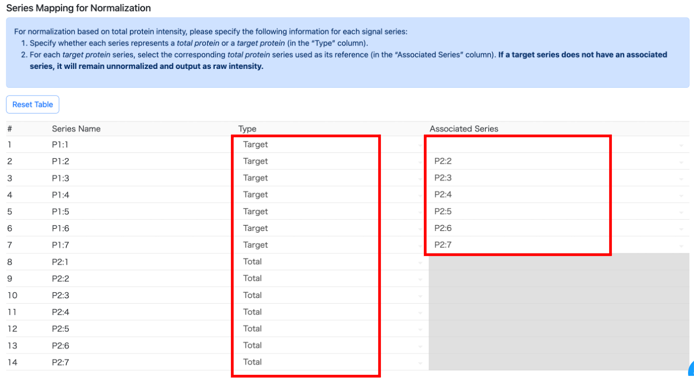

総タンパク質量を揃えた描画
概要
Total Protein Normalization (TPN) の作業フローは、以下のようになります。
-
各データ系列の対応づけ：
各系列にアノテーションを付与します。
まず、各系列がtotal（総タンパク質）かtarget（標的タンパク質）かを指定し、さらにtargetと対応するtotal系列を紐づけます。 -
スケーリングファクターの計算と補正：
total系列の総シグナル量が揃うように、すべての系列に対してスケーリングファクターを計算します。
このファクターを各系列に掛け、補正後のシグナル値を求めます。 -
描画の実行
操作方法
シグナルの読み込み
メインパネルで、シグナルファイルを読み込みます。
読み込みが完了したら [Normalization] タブ に移動し、正規化に関する一連の設定と計算を行います。

Example
サンプルファイルを読み込みます。
シグナルのアノテーション
まず、Series Mapping for Normalization セクションのテーブルに、読み込んだ各データ系列の情報を入力します。
TPN を行うためには、以下の情報が必要です。
- type 列： 各系列の種類（標的タンパク質（Target Protein） / 総タンパク質（Total Protein））
- Associated Series 列： 各標的系列に対応する総タンパク系列
Example
このサンプルでは、"P1:1"〜"P1:7" が標的タンパク質、"P2:1"〜"P2:7" が総タンパク質であり、それぞれ順番に対応するため、以下のように設定します。

Note
標的タンパク質の系列で Associated Series を空欄のままにした場合、その系列は正規化の対象外になります。
これは、分子量マーカーなど、総タンパク質系列との対応が不要な系列が存在する場合に便利です。
早い方法：番号による一括指定
系列数が多い場合は、Batch Annotation メニューを使ってまとめて設定できます。
2 つの入力欄があり、それぞれ次の役割を持ちます。
- 左側の入力欄： 総タンパク質系列をまとめて指定
- 右側の入力欄： 左側で指定した総タンパク質系列に対応する標的タンパク質系列を指定
総タンパク質系列をまとめて指定するには、左の入力欄に、"Series Configuration" の左側に表示されるインデックス番号を入力します。
番号は コンマ区切り または 範囲指定（例：8-14） に対応しています。
Example
例1：8〜14 の系列を総タンパク質系列として一括指定する場合
左の入力欄に 8,9,10,11,12,13,14 または 8-14 と入力します。

さらに、指定した総タンパク質系列に対応する標的タンパク質系列も、右側の入力欄でまとめて設定できます。
右側には、左側と 同じ個数・同じ順番 でインデックス番号を入力します。
Example
例2：8〜14 を総タンパク質系列とし、それぞれに 1〜7 の標的系列を対応させる場合
左に 1-7、右に 8-14 を入力し、Enter を押します。

正規化計算の実行
系列の対応設定が完了したら、正規化計算を行います。
設定項目は以下のとおりです。
-
Total Signal: Normalize to（必須）：
総シグナル量をどの系列に合わせるかを指定します。 -
Set Signal Calculation Range（任意）：
正規化に使用する分子量範囲を指定します。
指定範囲外のシグナルは計算から除外されます。 -
Stop integration at first negative value：
このオプションをオンにすると、各系列の総シグナル量を計算する際、
低分子量側で負のシグナル値が出た時点で積分（総和計算）を打ち切ります。
設定が完了したら [Calculate Normalized Signal] ボタンを押して計算を実行します。
計算が終了すると、ページ下部に Summary が表示され、
さらに [Normalized Data] タブ に計算結果が出力されます。

描画
正規化計算が完了したらメインのコントロールパネルに戻り、
描画モードとして Plot Normalized Data by Total Proteins を選択します。
その他の描画設定は、生データを描画する場合と同様です。